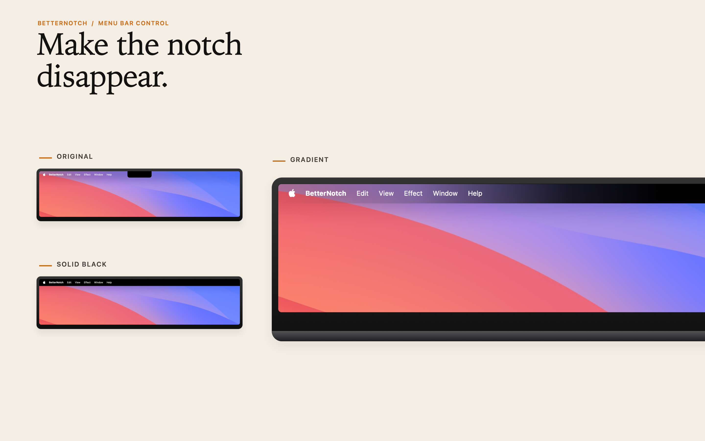
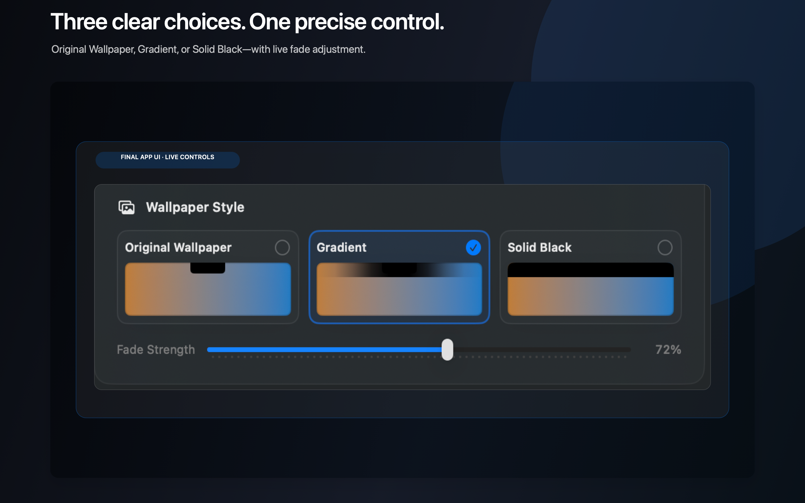

For MacBook models with a notch
Let the physical notch disappear into the menu bar.
BetterNotch blends the notch into your menu bar with a signature Gradient effect — and keeps it there, all day, using almost no resources.
One click. It’s just… gone.

Three looks, per display
Original
Your Mac, untouched. Turn the effect off for any display, any time.
Gradient Signature
The notch fades into a full menu bar so it feels like it was never there.
Solid Black
Prefer a completely black menu bar? One click for a clean, uniform look.
A tiny app that stays out of your way
- Per-display control — choose an effect for the built-in display and each external display independently.
- Lightweight by design — a static effect that runs quietly in the background and restores after login.
- Private by default — settings stay on your Mac. No account, no analytics, no tracking.

Built for the notch
Designed specifically for MacBook models with a physical notch — not a generic wallpaper hack.
Made for multiple displays
Built-in and external displays can each have their own look, rendered at the right menu bar height.
Runs all day
A lightweight background effect you can set once and forget about — it comes back after every login.
Support
System requirements, setup steps, and answers to common questions.
Privacy
See exactly what stays on your Mac — and what never leaves it.